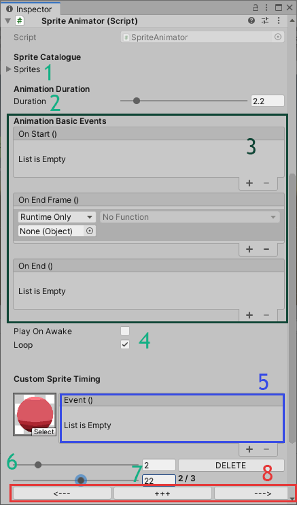

SpriteEngine class
Constructors
SpriteEngine(SpriteRenderer renderer,Sprite[] sprites,float duration,bool loop)
SpriteEngine(Image renderer,Sprite[] sprites,float duration,bool loop)
Set the basic property, as the renderer for the animation, the Sprites property and the Duration property. Note that it works with a SpriteRenderer component but also on Image component. the loop parameter is optional its default value will be false.
Methods
void PlaySpriteAnim()
Launch the animation return with no effect if :
- the instance is already animating
- the Sprites array is null or empty
void StopSpriteAnim()
Stop the animation and reset the Renderer to the first sprite of the array, return with no effect if :
- the instance is not animating
void PauseSpriteAnim()
Pause the animation at the frame, call PlaySpriteAnim() and it will resume. Return with no effect if :
- the instance is not animating
void Restart()
It’s just StopSpriteAnim() and PlaySpriteAnim(), it restarts the animation, it’s useful when you want to apply parameters (as sprites array for instance) and refresh the animation.
void AddCustomSpriteTiming(int spriteIndex,float timeGapPerCent,Action customEvent)
Add a CustomTime object (see the CustomTime class) at index
in the Sprites property .It sets timeGapPerCent property to
timeGapPerCent , the customEvent as a action to Event property
and finally sets the spriteIndex property to spriteIndex property.
If there already is a custom sprite timing at the spriteIndex,
it will override it.
return with no effect if :
- sprites array is null or empty
void RemoveCustomTimeAtSpriteIndex(int index)
Remove a custom time at index in the Sprites property.
return with no effect if :
- there is no custom time at the index.
bool isAlreadyCustomTimeAtSpriteIndex(int index)
return true if there is a
customTime at index in the Sprites property. return false if there is'nt.
CustomTime GetCustomTimeAtSpriteIndex(int index)
return a CustomTime object if there is custom time at index in the Sprites property. Return null if there is'nt.
Properties
Sprite[] Sprites
It stores all the sprites of the animation (you have to put them in the chronological order)
bool Loop
true -> animation will loop
false -> animation won’t loop
float duration
the total time which the animation last.
CustomTime[] CustomTimes
It stores all the CustomTime objets, but we recommend you to manipulate
customtime throughout the CustomTime methods in the SpriteEngine class.
(GetCustomTimeAtSpriteIndex() for instance)
CustomTimeEvent OnStart
It stores a CustomTimeEvent, this CustomTimeEvent
will be call at the start of each animation cycle.
You can add action to it by calling AddListener()
method.
CustomTimeEvent OnEnd
It stores a CustomTimeEvent, this CustomTimeEvent will
be call at the end of each animation cycle.
CustomTimeEvent OnEndFrame
it stores a CustomTimeEvent, this CustomTimeEvent will
be call at the end of each frame of the animation.
NOTE : These 3 events are just CustomTimeEvent at the end
either the first, the last or each sprite. There are here to avoid
creating CustomTime for these basic events.
Properties (readonly)
bool IsPlaying
true -> animation is playing
false -> the animation is not playing
bool IsPaused
true -> animation is paused
false -> the animation is not paused
CustomTime class
Constructors
CustomTime(float duration,float spriteLength,int index)
These parameters set a timeGapPerCent equal
to the average sprite duration at index in
the Sprites array. In other word, this constructor
create a new CustomTime without affecting
the animation yet. Remember that
AddCustomSpriteTiming() in the SpriteEngine
class handle all of this. It also create a
CustomTimeEvent instance. It also set the
spriteIndex to index. Use this object if you're sure of
what you are doing.
Methods
void newEvent(UnityAction action)
Add a non persistent listener (action) to the
Event property.
Properties
int spriteIndex
the index of the Sprites property on which the custom event is.
float timeGapPerCent
it represents how much (per cent) the sprite
(spriteIndex) will take on the total duration.
For instance if the Duration is 2sec and the
first sprite has a CustomEvent with timeGapPerCent
of 50, the first sprite will last 1sec and all the
others 1sec.
CustomTimeEvent Event
A CustomTimeEvent invoked each time the sprite (spriteIndex) is shown in the animation
SpriteAnimator class/component
This component allows you to set up quickly an animation throughout the editor. You
can easily access to main features of the SpriteEngine. As its property : duration,
loop, sprites,OnStart,OnEnd,OnEndEvent. But you can also add custom time to
sprite thank to this interface.

This is what the SpriteAnimator component looks like.
Caption
1.
Sprites property, drag and drop all your sprites in the chronological order.
2.
Duration property, to set the duration of the animation.
3.
Add persistent listener to OnEnd,OnStart,OnEndFrame Event
4.
Two bools parameters.
Loop -> to set the Loop property, animation will loop or not
and the
PlayOnAwake property -> if the animation will start on Awake(On play) or
not.(If not you’ll have to Play the animation thank to a script).
CustomTime Editor :
5.
To add a persistent listener to the CustomTimeEvent of the selected CustomTime.
6.
The spriteIndex property, a whole number slider which allows you to chose the
sprite which you want to add a CustomTime
7.
The timeGapPerCent property, a slider to set timeGapPerCent. No worry if the
slider doesn’t reach 99, all your CustomTime added can’t be over 99 so the slider is
automatically updated.
8.
The navigation panel. The CustomTime that you’re currently editing is shown
thank to the “2 / 3” label. If you want to add one CustomTime more click on “+++”
button, you can navigate and see all your CustomTimes thank to the rigth and left
arrow. Note that once you’ve added a CustomTime you don’t need to confirm
anything.
Methods
void Apply()
If you made a variable changement at runtime without the editor, you’ll
need to call this method to Apply changements you’ve made.
Properties
Same properties than the SpriteEngine class
SpriteEngine Engine
access to the instance -> Access to Play,Pause,Stop
methods, property(we recommand you to change the SpriteAnimator property then
call the Apply() method instead of directly change property in Engine property)